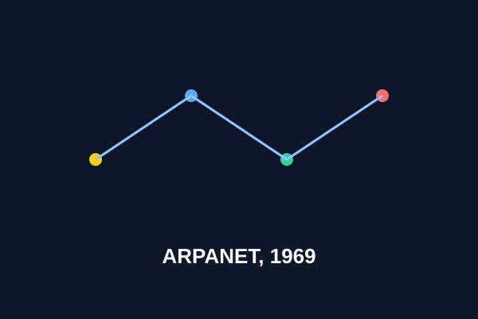

1957 – 1969 · Az alapok

A hidegháború hálózata: ARPANET
1957-ben a Szputnyik-sokk után az USA létrehozza az ARPA-t. Paul Baran és Donald Davies kidolgozza a csomagkapcsolás elvét. 1969. október 29-én az UCLA és a Stanford között átmegy az első üzenet: a LOGIN szóból csak a LO érkezik meg, mert lefagy a rendszer – mégis történelmet írnak.